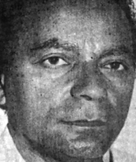

Membro-fundador da CONORTE, Paulo da Costa nasceu na Paraíba, mas conhece a região desde o tempo em que Bernardo Sayão e sua equipe implantavam a Belém-Brasília. Economista com experiência em Análise Financeira e Auditor fiscal do Tesouro do Distrito Federal com especialização em Administração Tributária deu uma grande contribuição à causa nortense.
